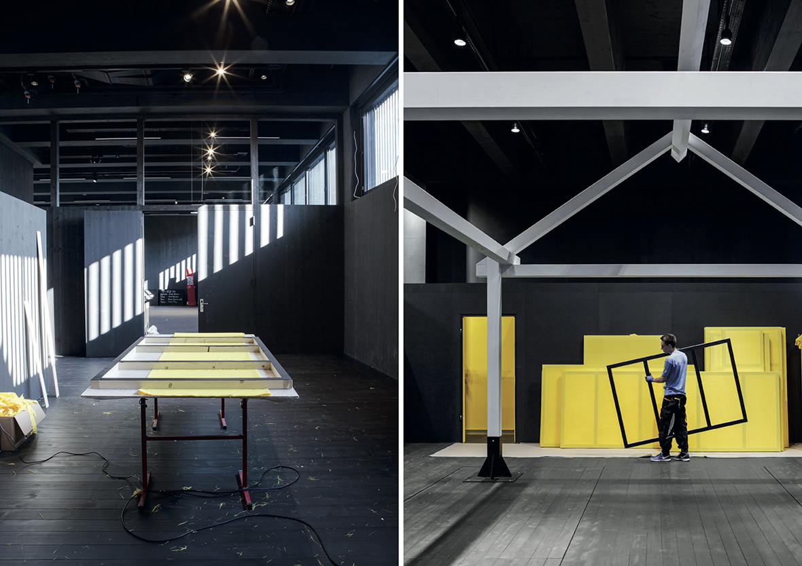
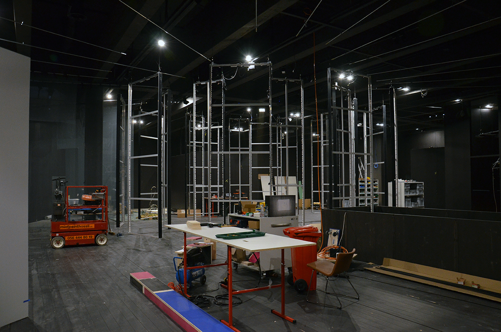
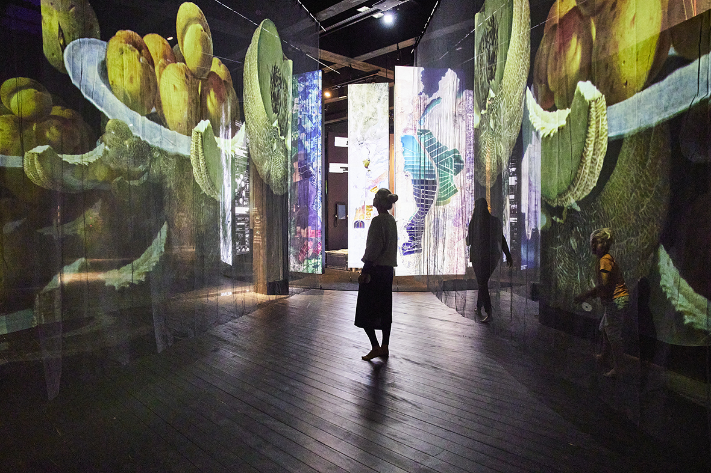
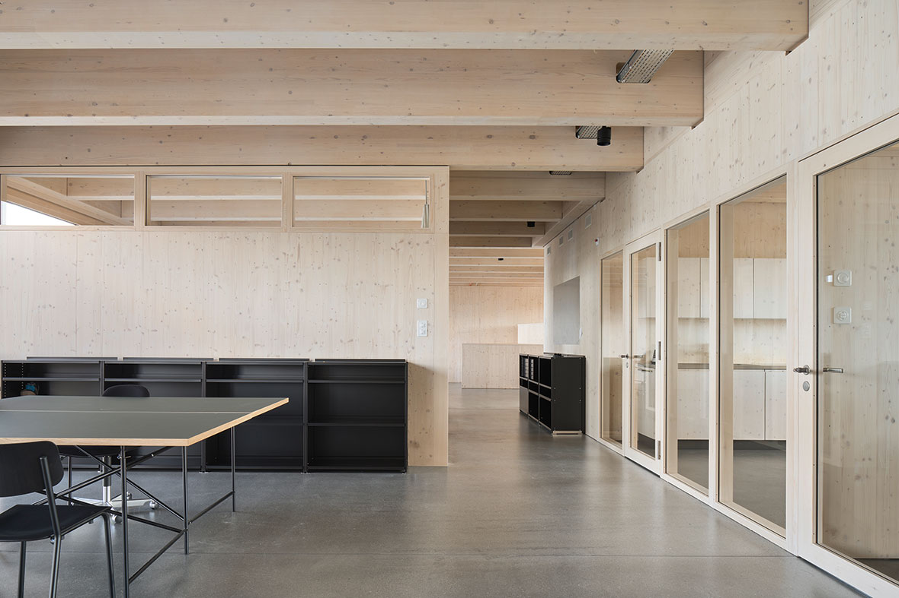

Mit dem neuen Standort am Bahnhof Lenzburg erhält das Stapferhaus eine adäquate räumliche Präsenz, sowohl für seine inhaltlichen Werte wie auch für seine nationale, kulturelle Bedeutung. Das kubisch geprägte Haus mit den drei programmatischen Komponenten Stapferbühne, Betriebshaus und Ausstellungshalle verortet die Anlage im städtischen Kontext und transformiert den heterogenen Bahnhofsbereich in einen attraktiven öffentlichen Ort.







Die Stapferbühne wirkt als offene, bespielbare Pergola und
ist zugleich Bindeglied zur Stadt. Sie soll für jede Ausstellung neu inszeniert werden und funktioniert in Verbindung mit dem Café auch als Begegnungsort.
Das dreigeschossige, vertikal gerichtete Betriebshaus ist von der Ausstellungshalle räumlich
abtrennbar und lässt eine weitgehend unabhängige Nutzung zu.
Ebenso wandelbar ist die Ausstellungshalle, die aufgrund einer
Tragstruktur mit modular aufgebauten Wand- und Deckensystemen
ohne grossen Aufwand den jeweiligen Bedürfnissen angepasst
werden kann. Dank einem flexiblen Erschliessungssystem kann der Besucherfluss vielfältig über die Geschosse geführt werden.